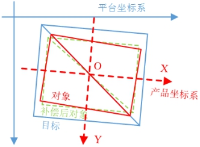
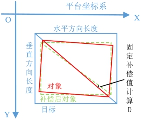

如图1所示，对象与目标的产品长宽比不同时，直接进行两角点的对位，会造成目标和对象的外轮廓存在角度偏差，因而对位的偏移量需要一定的补偿才能达到理想的对位结果。而该产品坐标系下的补偿值还需要进行一定的修正，并最终转换到平台坐标系下。本工具就是用于根据目标的绝对角度，将产品坐标系下的补偿值修正到平台坐标系。

| 分类 | 参数名称 | 参数描述 |
|---|---|---|
| 属性窗口 | 目标水平长度 | 目标产品的水平长度。 |
| 目标垂直长度 | 目标产品的垂直长度。 |
|
| 对象水平长度 | 对象产品的水平长度。 |
|
| 对象垂直长度 | 对象产品的垂直长度。 |
|
| 图像窗口 | 无 | 无 |
| 数据链 | 平台轴方向 | 平台各轴的正方向。 |
| 目标绝对角度 | 目标产品坐标系在平台坐标系下的绝对角度。 |
|
| X补偿值 | 产品坐标系下的X轴方向补偿值。 | |
| Y补偿值 | 产品坐标系下的Y轴方向补偿值。 | |
| D补偿值 | 产品坐标系下的D轴补偿值。 | |
| 高级界面 | 无 | 无 |
| 分类 | 参数名称 | 参数描述 |
|---|---|---|
| 监视窗口 | 固定补偿计算值D | 对象到对位补偿后的对象固定旋转补偿值。 |
| 平台X补偿值 | 平台坐标系下的X轴方向补偿值结果。 | |
| 平台Y补偿值 | 平台坐标系下的Y轴方向补偿值结果。 | |
| 平台D补偿值 | 平台坐标系下的D轴补偿值结果。 | |
| 执行结果 | 工具执行结果。 | |
| 执行时间 | 工具执行时间。 | |
| 图像窗口 | 无 | 无 |
| 数据链 | 无 | 无 |
如图2所示，固定补偿计算值D可以理解为是当前对象到补偿后对象位置的固定旋转角度。

由属性中输入的目标与对象各方向的长度，可以计算该角度。公式为：
计算出固定补偿D之后，可以得出最终的平台坐标系下的旋转量为属性中D补偿值与固定补偿计算值D的和。
目标绝对角度为目标产品坐标系在平台坐标系下的绝对角度。产品坐标系下的X/Y补偿量均为以此角度来转换为平台坐标系下的X/Y补偿量的。
属性窗口中的水平/垂直长度参数的水平/垂直是相对于平台坐标系而言的。其中固定补偿值D的计算只适用于目标/对象水平长度是相对于平台坐标系水平，目标/对象垂直长度是相对于平台坐标系垂直的情形下。
参见“\Samples\产品坐标系补偿修正工具.gvp”。